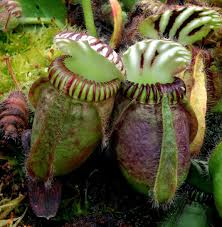

Cephalotaceae
Albany Pitcher Plant Family
Cephalotaceae is a monotypic plant family, containing only a single genus and single species, Cephalotus follicularis, commonly known as the Albany Pitcher Plant or Western Australian Pitcher Plant. This small, perennial carnivorous herb is endemic to peaty swamp habitats in Southwest Western Australia. Classified in the order Oxalidales, it is famous for producing highly modified pitfall pitcher traps alongside normal, simple foliage leaves in a basal rosette. It bears small, 6-merous, apetalous flowers on a tall scape, featuring an unusual gynoecium of typically 6 separate carpels.
Overview
Cephalotaceae is a unique family within the order Oxalidales (related to wood sorrels), comprising solely the Albany Pitcher Plant, Cephalotus follicularis. This species represents a highly specialized lineage with a very restricted natural distribution, found only in coastal peat swamps and moist, sandy heathlands near Albany in Southwest Western Australia. It is one of several distinct plant families worldwide that have convergently evolved a carnivorous habit.
The plant is a small, low-growing perennial herb that forms a basal rosette of leaves from a rhizome. Its most striking feature is the production of two distinct types of leaves (leaf dimorphism): flat, simple, ovate foliage leaves that are primarily photosynthetic, and highly modified, complex pitcher leaves that function as pitfall traps to capture and digest insects and other small arthropods. This carnivorous adaptation allows it to supplement nutrient uptake in the nutrient-poor soils where it grows.
Reproduction occurs via small, whitish flowers borne on a tall, leafless stalk (scape) that rises well above the rosette. The floral structure is unusual, typically having 6 tepals (no petals), 12 stamens, and a gynoecium composed of 6 separate carpels (apocarpous). Due to its unique appearance and carnivorous nature, Cephalotus follicularis is highly sought after in cultivation by carnivorous plant enthusiasts worldwide, although it can be challenging to grow.
Quick Facts
- Scientific Name: Cephalotaceae Dumort.
- Common Name: Albany Pitcher Plant family
- Number of Genera: 1 (Cephalotus)
- Number of Species: 1 (Cephalotus follicularis)
- Distribution: Endemic to Southwest Western Australia
- Evolutionary Group: Eudicots - Rosids (Fabids / Eurosids I) - Order Oxalidales
Key Characteristics
Growth Form and Habit
Small, perennial, rhizomatous herb forming basal rosettes. Terrestrial and carnivorous, utilizing pitfall traps (pitchers) modified from leaves.
Leaves
Leaves are distinctly dimorphic (two forms) arising from the basal rosette:
- Foliage Leaves: Simple, entire, ovate to elliptical, flat, somewhat fleshy, green, petiolate. These are primarily photosynthetic and typically produced during warmer months.
- Pitcher Leaves (Traps): Highly modified leaves functioning as pitfall traps. Each pitcher is stalked, urn-shaped (ascidiate), typically 2-5 cm long (up to 8 cm in cultivation), and complexly structured. It features a hinged lid (operculum) often with translucent 'windows', a thickened, ribbed rim (peristome) bearing nectar glands and downward-pointing teeth to prevent escape, smooth internal walls, and contains enzyme-rich fluid at the bottom for digesting prey (mostly insects). Pitchers are often reddish or purplish when mature and produced mainly during cooler months.
Stipules are absent.
Inflorescence
Flowers are borne on a long (up to 60 cm), erect, leafless flowering stalk (scape) that emerges from the center of the rosette. The inflorescence itself is terminal, usually an elongated spike-like thyrse or a panicle composed of small dichasia (cymes).
Flowers
Flowers are small (usually < 1 cm), actinomorphic (radially symmetrical), bisexual (perfect), and typically 6-merous.
- Perianth: Apetalous (lacking petals). There is a single whorl of usually 6 (sometimes 5-7) sepal-like tepals, which are whitish, greenish, or cream-colored, somewhat petaloid in appearance, distinct or slightly fused at the base, and persistent.
- Androecium: Usually consists of 12 stamens arranged in two whorls of 6. Filaments are short. Anthers are small, typically reddish or purplish, dehiscing via longitudinal slits. Stamens are inserted below the gynoecium, possibly associated with a rudimentary nectar disk or annulus at the base.
- Gynoecium: Distinctively apocarpous, composed of usually 6 separate (or only very slightly fused at the base) unicarpellate pistils arranged in a whorl on the receptacle. Each carpel is superior, contains 1 (rarely 2) basal ovule, and tapers into a short style with a simple stigma.
Fruits and Seeds
The fruit is an aggregate of dry, one-seeded units developing from the separate carpels. Each unit is typically described as a follicle (dehiscing along one suture) or an achene (indehiscent). The individual fruits are small, often hairy (pubescent), and may retain the persistent style. Each contains a single small seed with fleshy endosperm.
Chemical Characteristics
The primary chemical feature of note is the production of various digestive enzymes (including proteases, phosphatases, chitinases) secreted into the pitcher fluid to break down captured prey. Other chemical constituents are less studied or emphasized compared to its unique morphology and carnivorous habit.
Field Identification
Identifying Cephalotaceae is straightforward due to its single species with highly distinctive features and extremely limited natural range.
Primary Identification Features
- Carnivorous Habit with Unique Pitchers: The presence of the characteristic lidded, ribbed pitcher traps alongside flat foliage leaves is unmistakable.
- Basal Rosette Habit: Low-growing herbaceous perennial forming rosettes.
- Restricted Endemic Distribution: Found naturally ONLY in specific swampy/peaty habitats in Southwest Western Australia.
Secondary Identification Features
- Long, leafless flowering scape (seasonal).
- Small, 6-merous, apetalous flowers (seasonal).
- Gynoecium of 6 separate carpels (requires close examination of flower).
Seasonal Identification Tips
- Pitcher Production: Often most vigorous during cooler, wetter months (winter/spring in SW Australia).
- Foliage Leaf Production: More prominent during warmer months (summer).
- Flowering: Typically occurs in late spring or summer (in its native habitat).
- Habitat: Confined to specific peaty, moist, often sandy substrates near swamps or streams in its endemic range.
Common Confusion Points
- Other Carnivorous Pitcher Plants:
- Nepenthes (Nepenthaceae): Pitchers form at the tips of tendrils extending from leaf midribs; different flower structure; Old World tropical distribution (Asia, Madagascar); different order (Caryophyllales).
- Sarracenia, Darlingtonia, Heliamphora (Sarraceniaceae): Pitchers are modified rolled leaves, often tall and erect (except Darlingtonia hood); different flower structure (often large, showy, 5-merous); New World distribution; different order (Ericales).
- Cephalotus pitchers are unique in morphology and development among carnivorous plants. Its combination of features and geographic isolation make confusion unlikely if details are observed.
Field Guide Quick Reference
Look For:
- Carnivorous herb
- Basal rosette
- Dimorphic leaves: Foliage + Pitchers
- Unique lidded, ribbed pitcher traps
- Endemic to SW Australia (specific swamps)
- Long flowering scape (seasonal)
- Small, 6-merous, apetalous flowers
- 6 distinct carpels
Key Variations:
- (Monotypic family - variations are intraspecific)
- Pitcher size and coloration
- Relative abundance of pitchers vs. foliage leaves
Notable Examples
The family Cephalotaceae contains only one living species.

Cephalotus follicularis
Albany Pitcher Plant
The sole representative of the family. A small perennial herb forming rosettes up to 20 cm across. Produces both simple, ovate green foliage leaves and highly specialized, lidded pitfall pitcher traps (up to ~5 cm long). The pitchers capture insects which are digested by enzymes in the contained fluid. Bears small, 6-parted, white flowers on a tall scape. Endemic to peaty swamps near Albany, Western Australia. Popular in carnivorous plant collections.

Cephalotus Pitcher Detail
Pitcher Trap Structure
The pitchers of Cephalotus are complex pitfall traps. Key features include the hinged lid (operculum) often with translucent 'windows' that confuse insects inside, a thickened rim (peristome) with nectar glands and inward-pointing teeth, and smooth, waxy inner walls making escape difficult. Digestive glands at the base secrete enzymes.

Cephalotus Flower Detail
Flower Structure
The small flowers are unusual among eudicots. They lack petals but have 6 whitish, petal-like tepals. Inside are typically 12 stamens in two whorls. The central gynoecium consists of usually 6 separate carpels (apocarpous), each developing into a single-seeded fruitlet (follicle or achene).
Phylogeny and Classification
Cephalotaceae is placed within the order Oxalidales, part of the Fabid clade of Rosids. This placement is strongly supported by molecular phylogenetic analyses. Oxalidales is a moderately sized order containing diverse families like Oxalidaceae (wood sorrels), Connaraceae (tropical vines), and Cunoniaceae (often trees/shrubs).
Within Oxalidales, Cephalotaceae represents a highly specialized and isolated lineage. Its exact sister relationship is sometimes debated, but it often resolves as sister to the large clade containing Oxalidaceae, Connaraceae, and Cunoniaceae, or potentially sister to all other families in the order. Regardless of the precise branching order, it is clearly an early-diverging lineage within Oxalidales that evolved its unique carnivorous habit independently of other pitcher plant families in different orders (Nepenthaceae in Caryophyllales, Sarraceniaceae in Ericales).
Position in Plant Phylogeny
- Kingdom: Plantae
- Clade: Angiosperms (Flowering plants)
- Clade: Eudicots
- Clade: Rosids (Fabids / Eurosids I)
- Order: Oxalidales
- Family: Cephalotaceae
Evolutionary Significance
Cephalotaceae, despite being monotypic, is evolutionarily significant:
- Convergent Evolution of Carnivory: Provides a striking example of how the complex carnivorous pitcher plant syndrome evolved independently in different angiosperm lineages (Oxalidales here vs. Caryophyllales, Ericales, Lamiales elsewhere).
- Phylogenetic Isolation: Represents a long, isolated branch within the Oxalidales, making it crucial for understanding the early evolution and diversification of this order.
- Morphological Specialization: Exhibits extreme modification of leaves into sophisticated pitfall traps, demonstrating plant adaptability and developmental plasticity.
- Biogeography and Endemism: Its highly restricted distribution in SW Australia highlights the role of geographic isolation and specific habitat requirements in shaping unique biodiversity hotspots.
- Unusual Floral Morphology: The 6-merous flowers with an apocarpous gynoecium are uncommon features among rosids, providing points for comparative morphology studies.